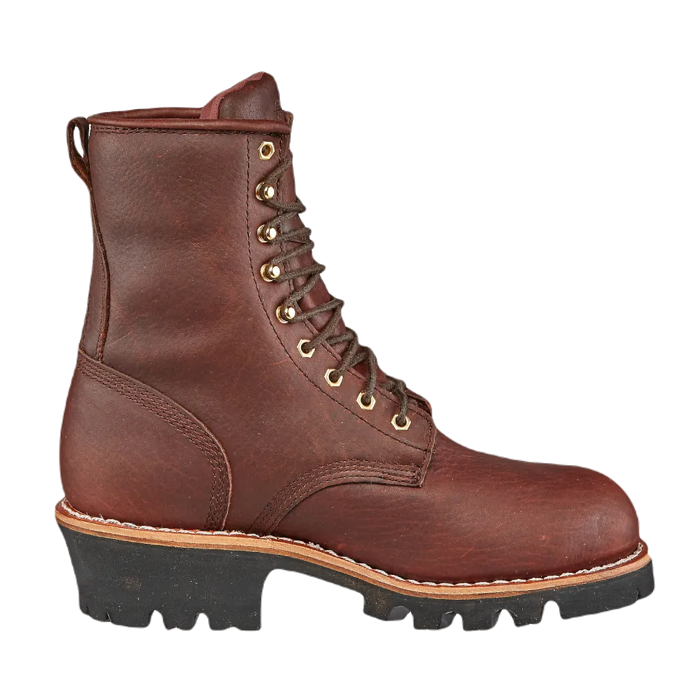

Top 7 Best Boots for Yard Work 2024
To start this article discussion with introduction of shoes that are good for workers who are trying to do best boots for yard work in heavy construction to protect feet. Shoes are best part of things that are good to save your feet from every part that are not good for you.
These shoes are best to work on a base that need some heavy shoes to prevent shin from being damage and this shoes will help you out from all type of things that are not good for you. We are well aware that how much you are suffering for this work and how it will help you to make your feet comfortable and good in condition. Some jobs are very hectic but it has some things are need to change like shoes or taking care of it.
-
#1
Chippewalogger shoes
When discussing shoes for heavy-duty jobs, Chippewa shoes stand out as an excellent choice for those who prioritize foot health and safety. These shoes are equipped with high-quality features designed to provide optimal protection and comfort. With durable leather layers, they effectively address water-related issues, making them ideal for demanding work environments.
Chippewa shoes are particularly valued by workers for their ability to handle tough conditions. They offer a combination of softness inside and toughness outside, which is crucial for landscaping and other strenuous tasks. The shoes incorporate air technology to manage sweat and ensure comfort in various weather conditions, including hot weather, by providing adequate breathability and ventilation. -
#2
Carolina toe
When selecting high-quality shoes, it's crucial to find ones that offer optimal comfort and functionality to address your specific needs. The best work shoes are crafted from premium materials that ensure durability and reliability for demanding tasks.
These shoes are equipped with technical features that provide a cooling effect and superior comfort, enhancing overall performance. They are designed to accommodate narrow or smaller feet, ensuring a precise fit that reduces discomfort and offers excellent support throughout your workday. -
#3
Iron age ladder
For individuals engaged in heavy-duty tasks, it's essential to have footwear that provides optimal comfort and support. These shoes are designed to deliver maximum comfort for your feet, making them ideal for demanding work environments. They offer excellent protection for your toes and are engineered to handle challenging conditions, including climbing ladders and working in wet environments. The waterproof feature ensures that your feet stay dry, minimizing the risk of discomfort and injuries related to toe problems.
As people age and continue to demonstrate their strength through laborious work, these shoes are particularly beneficial. They provide enhanced comfort for the toe area, allowing individuals to work more efficiently and with greater ease. The design helps prevent slipping in various conditions, such as wet or muddy surfaces, which is crucial for safety in construction work. Additionally, the shoes offer shock absorption capabilities at an affordable price, contributing to overall foot comfort and protection.
Overall, these shoes are a reliable choice for those seeking durability and comfort in challenging work conditions. They provide waterproofing and shock absorption, making them a practical investment for anyone needing dependable footwear for heavy-duty tasks. -
#4
Pro boondocks
For those engaged in demanding jobs like construction or yard work, high-quality footwear is essential to provide comfort and protect the toes, which are vulnerable to injury. These shoes are specifically designed to offer superior toe protection and ensure that workers can perform their tasks safely and efficiently. The shoes are built to withstand tough conditions and are tailored to meet the needs of workers who require reliable performance in various environments.
These boots are ideal for landscaping and other challenging tasks, combining excellent design and durability. They are crafted to meet high standards of quality and affordability, ensuring that workers can find a product that meets their needs without compromising on performance. For those searching for footwear that excels in all aspects—comfort, protection, and durability—these shoes offer a comprehensive solution that addresses all of these requirements effectively. -
#5
Heat resistant work boots
To find the right footwear for your needs, it's important to understand the key features that make shoes suitable for specific work environments. This guidance will help you choose shoes that are optimal for workers, addressing their unique requirements. Heat-resistant shoes, for example, are designed to manage sweat and offer exceptional heat resistance, making them ideal for hot summer conditions.
For those working in chemical industries, selecting shoes that provide both comfort and safety is crucial. These shoes are designed to offer excellent support and protect your feet in various working conditions. They feature properties such as oil resistance and waterproofing, ensuring comprehensive protection and durability in demanding environments.
Overall, these shoes are well-suited for professionals seeking reliable footwear that promotes foot health and provides effective protection against hazards. Whether dealing with heat, chemicals, or other challenging conditions, these shoes offer the necessary features to safeguard and support your feet throughout your workday. -
#6
Reflective work shoes
Shoes designed for optimal comfort and quality are essential for addressing toe issues that can arise during work. These high-quality shoes are crafted to provide the support and durability needed to handle the demands of your job, ensuring that you remain comfortable and protected throughout your workday.
Your feet require footwear that can manage pressure and provide consistent comfort, especially in construction settings. These shoes are specifically designed to tackle the challenges of such environments, offering superior protection and durability. They feature long-lasting quality and innovative design elements that address common issues, ensuring that your feet are well-supported and comfortable. -
#7
Danner quarry work shoes
.webp)
TFor workers seeking high-quality footwear, these shoes are an excellent choice, offering superior craftsmanship and design. They are specifically built to address common issues, providing reliable support for your toes with an exceptional outsole and midsole.
These shoes feature excellent moisture management, designed to absorb sweat and offer protection against shock. Their waterproof qualities ensure that you stay comfortable and dry, minimizing any disruptions during your work.
Understanding the challenges of heavy-duty work, we prioritize your comfort and durability. These shoes are crafted to provide the best quality, ensuring that you can perform your tasks efficiently and comfortably.